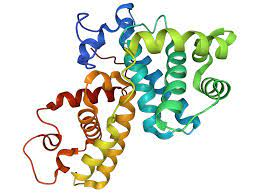
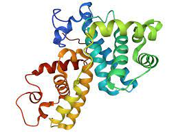

Here I utilized a logistic regression model for the classification problem of predicting if a patient has diabetes or not. The logistic regression model performed with 78% accuracy utilzing features (BMI, Glucose, Pregnancies, and Diabetes Pedigree Function).
 

Utilization of a naive-bayes learning model to predict the classification of
a protein based off the RNA sequence of the protein.
Utilization of Power B.I. and Power Query to transform professional survey data
to create an insightful and detailed dashboard to aid in drawing conclusions from data.

Creation of a Tableau dashboard to highlight competency in Tableau navigation and analysis of
average AirBnB market prices for zipcodes in Washington.
Creation of a multi-variate regression model to predict medical charges incurred by the insuree.
Analysis of bike sales between different categorical and numerical variables.
Creation of Excel dashboard and slicers to further enhance usability and aid
user in filtering and extracting useful conclusions from data.

Demonstration of data cleaning and exploration utilizing Pandas and Python.
Further demonstration of data cleaning and exploration utilizing Pandas and Python.
Analysis of movie dataset and the various features of movies.
Utilized regression analysis to find high correlations between various movie
features with the goal of trying to predict how to increase box-office numbers.